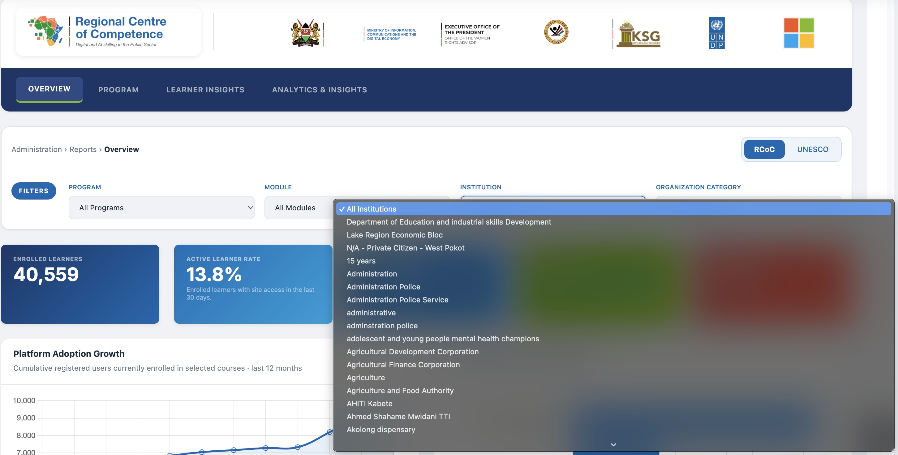

Building clean interfaces
and thoughtful software.
Developer focused on elegant UI, solid fundamentals, and projects that balance design with functionality.
Selected Projects
A selection of projects showcasing my skills and experience.
Data Analysis & Dashboard Development
A collection of dashboards and data visualisations developed to support data analysis, monitoring and reporting.



SafeHaven
A project focused on developing practical digital solutions.
Language Learning Assistant
A learning-focused project supporting language practice.
Machine Learning Experiments
Exploring machine learning concepts and practical applications.
About
I’m someone who enjoys thinking about why technology is built, not just how. I’m drawn to clean design, well-structured systems, and tools that respect the user’s attention. From UI-driven applications to data and machine learning projects, I like exploring different sides of tech while staying grounded in fundamentals. I value curiosity, iteration, and building things that are useful, honest, and thoughtfully designed.
Contact
Email or connect via GitHub to collaborate or chat about projects.